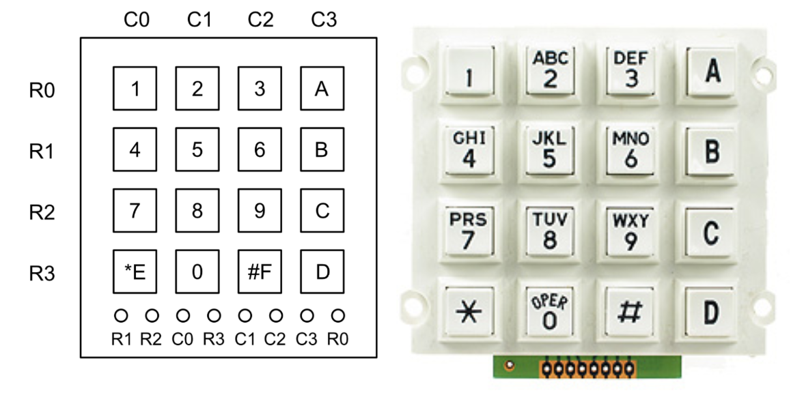
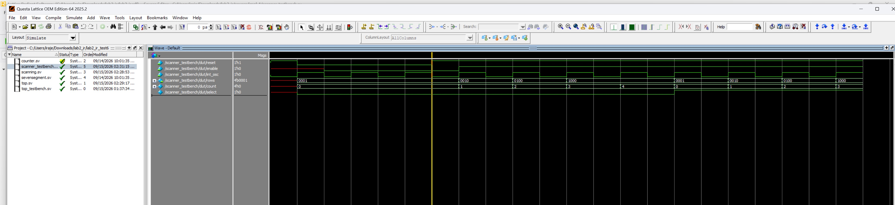
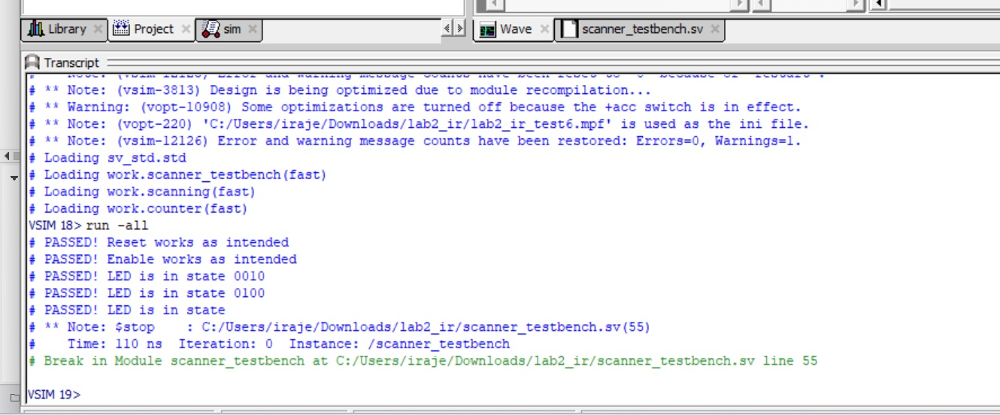
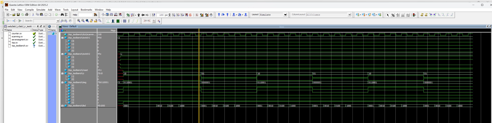
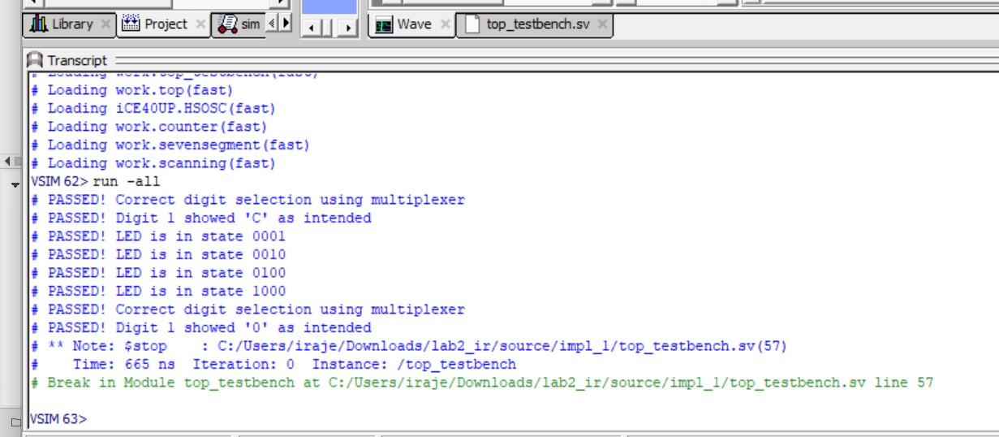
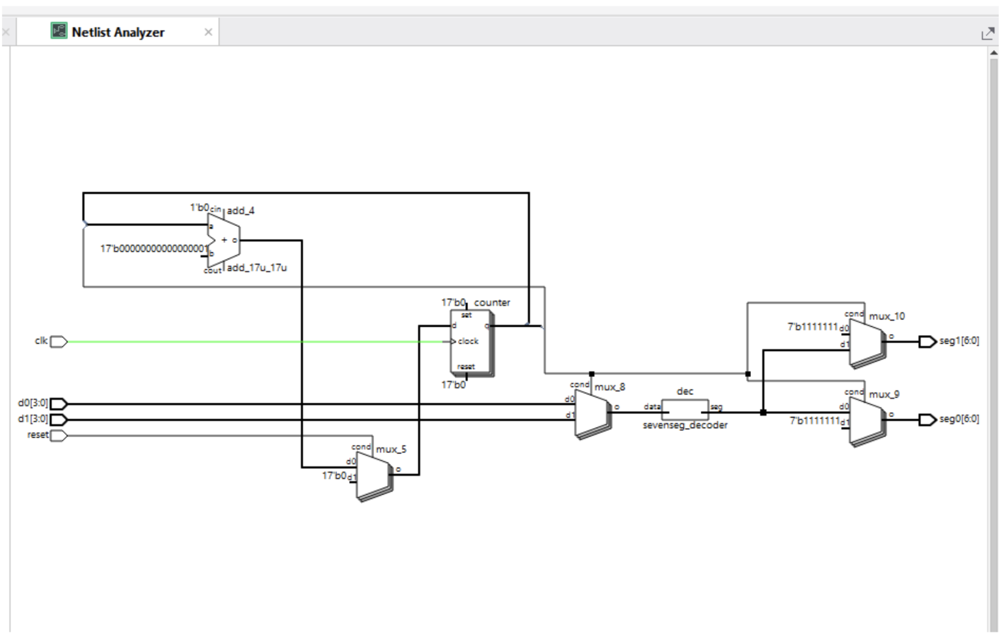
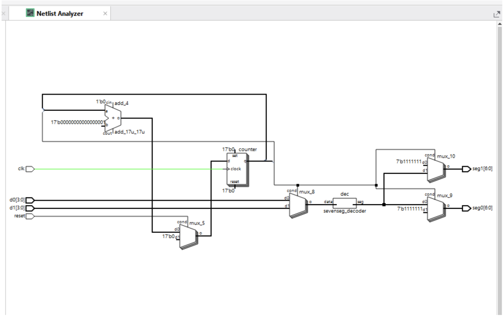

Lab 2: Multiplexed 7-Segment Display and Keypad Row Scanning
Introduction
In this lab, I continued the modular FPGA design in Lab 1 by using the combinational seven-segment decoder module which allowed one hexadecimal value to be displayed and the parameterized counter module controlled. This allowed for this lab to focus on integrating a time-multiplexed dual display and a matrix-keypad scanner.
The dual display helped show two independent hexadecimal values using one seven-segment decoder using one shared set of cathode signals. A counter rapidly alternated between the two display digits so that both appeared continuously illuminated.
The keypad scanner sequentially activated four rows with each signal toggling at 2 Hz. Additionally, NPN transistors were used to convert the FPGA row signals into open-collector outputs, while pull-up resistors helped define column logic levels. Red and green LEDs were used to indicate the active row and detected keypad column.
Design and Testing Methodology
Hardware Design
Multiplexed Seven-Segment Display
The two common-anode display used one set of seven segment cathode signals that were conmnected in parallel to both digits of the display using the [datasheet] ((https://www.broadcom.com/products/leds-and-displays/7-segment/through-hole/hdsp-5721). The SystemVerilog code implemented a multiplexing counter output which selected one of the two four-bit switch inputs and passed it into the seven-segment decoder. The same counter output enabled the corresponding display digit.
The seven-segment module from Lab 1 was reused without any modifications. The decoder contained combinational logic that translated a 4-bit hexadecimal input into an active-low seven-segment pattern. The multiplexer selection logic added to Lab 2 allowed for this decoder module to be used to take two different 4-bit inputs and serve both displays, displaying the corresponding hexadecimal value independently.
A 2N3906 PNP transistor controlled both the common anode of each digit. These transistors were required because one FPGA output could not safely supply the combined current required when multiple segments were illuminated. Each segment required an individual current-limiting resistor and each PNP base required a resistor to limit current from the FPGA digit enable output.
Ultimately, the display multiplexing frequency needed to be fast enough to present viisble flickering while allowing the electrical signals to settle before the next digit was visible. Given that for human eyesight, a flcikering light blends into a solid image at ~60Hz, I chose a 96Hz (multiple of the high-speed oscillator on the FPGA) as the frequency to flash my digits at.
Keypad Scanner

Figure 1: Image of 4x4 Matrix Keypad Pinout and Circuit Layout. Diagram illustrating the rows and columns terminal assignments alongside the physical membrane keypad layout.
The keypad scanner was the main new module added in Lab 2. It reused an instance of the parameterized counter from Lab 1 and converted the counter state into the four required row patterns.
Each FPGA row outlet drove a 2N3904 NPN transistor configured as an open-collector output. When a row signal was asserted (based on the pre-assigned scanning pattern),the transistor turned on and pulled the corresponding row to low (ground or 0V). Whereas, when the signal was not asserted, the transistor turned off and left the row floating.
The open-collector circuit prevented two FPGA outputs from directly driving against each other when multiple keys were pressed. Each NPN transistor required a resistor between its base and the FPGA output to limit the base current.
Each keypad column was also connected to 3.3V (from the FPGA board) through a pull-up resistor. When no key is pressed, the pull-up resistor helps maintain a defined logic high value. Pressing the key connected the selected row to its correspodning columnm which caused a column to read logic low.
SystemVerilog Design
Lab 1 Module reuse and parameterization
Lab 2 reused both the counter.sv and sevensegment.sv modules that were tested and verified in Lab 1. The counter module contained the parameters maxcount and width, allowing multiple instances to generate different timing signals without creating separate counter modules, which was incredibly helpful for Lab 2.
One counter was instantiated in the top module to generate the display-multiplexing timing signal. A second counter was instantiated inside the scanning module which was useed to generate the slower keypad-row timing signal which allowed the 4 rows to be scanned twice every second (~2Hz). As mentioned, the seven-segment decoder was also reused and, with Lab 2’s time-multiplexing sleection, allowed for the digits to be driven by different set of inputs.
Multiplexing logic
The multiplexing counter helped perform the two following functions: – It helped select which four-bit hexadecimal input was sent to the seven-segment decoder to be flashed – It enabled the PNP transistor for the matching display digit
The way it worked was that during one interval, the first input was decoded and displayed on the first digit of the dual display. During the next interval, the second input was displayed on the other digit. The process was repeated at a frequency above 60Hz so that, to the humnn eye, both digits appeared continiously illuminated.
Scanning logic
The scanning module contained one parameterized counter and assign statements that used the ternary conditional operator which helped conert the counter output into the four row states to drie the leds and connections between the keypad pins and the FPGA. The module also included an active-low reset and enable input, with reset returning the scanner to its initial row. Disabling the module prevented the counter from advancing, while re-enabling it allowed scanning to continue.
Top-level logic
The top level module contained a internal oscillator, one seven-segment decoder, the multiplexing counter, the scanning module and the assign statemnets for input selection, digit enabling and the scanning passthrough.
Results and Discussions
Calculations
Resistor Selection and Current Calculations
Section 4.17 of the iCE40 UltraPlus Family Data Sheet states that an output high current of 8 mA for LVCMOS 3.3 V operation (used for Lab 2). All resistor values calculated below were to ensure that current through each FPGA pin was below 8 mA. The calculations also use the following: – Supply voltage: 3.3V – Red LED forward voltage: 2V – Green LED forward voltage: 2.2V – Seven-segment display forward voltage: 1.8V – PNP and NPN silicon base voltage drop: 0.7V
Simulations
Testing strategy
Given that the counter and seven-segment decoder has already been verified in Lab 1, this lab’s simulations focused on the new scanning module and the top-leel integration.
Scanning module testbench
The automatic scanning-module testbench reduced the counter parameters so that all behavior could be observed without simulating the complete hardware delay. The testbench demonstrated all four output transitions 0001 -> 0010-> 0100 -> 1000. It also asserted reset and verified that the scanner returned to its initial state. The enable input was deasserted to verify that scanning stopped, then reasserted to confirm that scanning resumed.
Click to view the scanning testbench code
`timescale 1ns/1ps
module scanner_testbench(); logic reset;
logic enable; logic int_osc;
logic [3:0] rows;
// instatantiate device under test
scanning #(.maxcount(4), .width(4)) dut(.reset(reset), .enable(enable), .int_osc(int_osc), .rows(rows));
// generate clock
always
begin
int_osc = 0; #5;
int_osc = 1; #5;
end
initial begin
reset = 1; #5;
reset = 0; #5;
enable = 0; #20;
// check if reset works
assert (rows == 4'b0001) $display("PASSED! Reset works as intended");
else $display ("FAILED! Reset did not work as intended");
//release reset
reset = 1;
// check if enable works
enable = 0; #5;
assert (rows == 4'b0001) $display("PASSED! Enable works as intended");
else $display ("FAILED! Enable did not work as intended");
//release enable
enable = 1; #5;
// check if LED is in state 0010 as intended
assert (rows == 4'b0010) $display ("PASSED! LED is in state 0010");
else $display ("FAILED! LED is in not state 0010");
#10;
// check if LED is in state 0100 as intended
assert (rows == 4'b0100) $display ("PASSED! LED is in state 0100");
else $display ("FAILED! LED is in not state 0100");
#10;
// check if LED is in state 1000 as intended
assert (rows == 4'b1000) $display ("PASSED! LED is in state");
else $display ("FAILED! LED is in not state 1000");
#50; $stop;
endendmodule
Click to view the scanning testbench waveforms and transcript


Figure 2 and 3: Waveform simulation and transcript of the scanning module showing the 4 outputs cycling through and reset and enable working. In this testbench, maxcount was set to 4, and outputs were toggled as desired after every clock cycles. Transcript shows that all the tests were passed.
Top level testbench
This automatic top-level testbench applied two different hexadecimal values through the different DIP switches and verified that the circuit alternated between them by looking at y[0] and y[1] as well as the segment outputs. In each multiplexing interval, the testbench checked that the correct digit-enable output was active and that the segments matched the decoder for the selected hexadecimal value.
Click to view the top module testbench code
`timescale 1ns/1ps
module top_testbench();
logic [3:0] switch1;
logic [3:0] switch2;
logic reset;
logic [1:0] y;
logic [6:0] seg;
logic [3:0] led;
// instantiate device under test
top #(.width(4), .maxcount(4)) dut(.switch1(switch1), .switch2(switch2), .reset(reset), .y(y), .seg(seg), .led(led));
// apply inputs
initial begin
switch1 = 4'b0000; #5;
switch2 = 4'b1100; #5;
reset = 0; #50
reset = 1;
// check MUX functionality has worked and the first digit has been turned on, and is showing the right number/letter
assert (y == 2'b10) $display ("PASSED! Correct digit selection using multiplexer");
else $display ("FAILED! Incorrect digit selection using multiplexer for switch ");
assert (seg == 7'b0110001) $display ("PASSED! Digit 1 showed 'C' as intended");
else $display ("FAILED! Digit 1 did not show C as intended");
// check if LED is in state 0001 as intended
assert (led == 4'b0001) $display ("PASSED! LED is in state 0001");
else $display ("FAILED! LED is not in state 0001");
#25;
// check if LED is in state 0010 as intended
assert (led == 4'b0010) $display ("PASSED! LED is in state 0010");
else $display ("FAILED! LED is in not state 0010");
#10;
// check if LED is in state 0100 as intended
assert (led == 4'b0100) $display ("PASSED! LED is in state 0100");
else $display ("FAILED! LED is in not state 0100");
#10;
// check if LED is in state 1000 as intended
assert (led == 4'b1000) $display ("PASSED! LED is in state");
else $display ("FAILED! LED is in not state 1000");
#50;
// check if MUX funcationality has worked and the second digit has been turned on, and is showing the right number/letter
assert (y == 2'b01) $display ("PASSED! Correct digit selection using multiplexer");
else $display ("FAILED! Incorrect digit selection using multiplexer for switch ");
assert (seg == 7'b0000001) $display ("PASSED! Digit 1 showed '0' as intended");
else $display ("FAILED! Digit1 did not show 0 as intended");
#500; $stop;
endendmodule
Click to view the top module testbench waveforms and transcript


Figure 4 and 5: Waveform simulation and transcript of the top module module showing y[0] and y[1] toggling everu cycle, revealing that both digits are being displayed with the intended hexadecimal pattern. Transcript shows that all the tests were passed.
Hardware Testing
Block Diagram
Schematic
Conclusion
Overall, Lab 2 expanded the modules developed in Lab 1 into a larger modular FPGA system. The verified counter and seven-segment decoder were reused but the primary work I did involed adding the multiplexing logic, keypad scanning module and PNP and NPN transistors.
The resulting design used one decoder to display two independent hexadecimal values and scanned a four-row keypad using open-collector transistor outputs. Parameterized counter instances generated the different display and keypad timing signals.
Overall it was a very enjoyable lab and I look forward to the integration of the keypad as an input into the dual seen-segment display in Lab 3.
Time spent: 28 hours
AI-Prototyping
For this AI prototype section, I prompted Claude’s Sonnet 5 model using the prompt “Write SystemVerilog HDL to time multiplex a single seven segment decoder (that decodes from four bits to a common anode seven segment display) to decode two sets of input bits and drive two sets of seven output bits.” It then outputted the following code which I then added to a new Lattice Radiant project and synthesized. Suprisingly, the AI model made no syntax errors and it synthesized first try.
details>
/// Common-anode seven segment decoder // seg is active low; bit order is {g, f, e, d, c, b, a} module sevenseg_decoder( input logic [3:0] data, output logic [6:0] seg ); always_comb case (data) 4’h0: seg = 7’b1000000; 4’h1: seg = 7’b1111001; 4’h2: seg = 7’b0100100; 4’h3: seg = 7’b0110000; 4’h4: seg = 7’b0011001; 4’h5: seg = 7’b0010010; 4’h6: seg = 7’b0000010; 4’h7: seg = 7’b1111000; 4’h8: seg = 7’b0000000; 4’h9: seg = 7’b0010000; 4’hA: seg = 7’b0001000; 4’hB: seg = 7’b0000011; 4’hC: seg = 7’b1000110; 4’hD: seg = 7’b0100001; 4’hE: seg = 7’b0000110; 4’hF: seg = 7’b0001110; default: seg = 7’b1111111; // all off endcase endmodule
// Time-multiplexes one decoder across two digits module sevenseg_mux #(parameter DIVBIT = 16) ( input logic clk, input logic reset, input logic [3:0] d0, d1, output logic [6:0] seg0, seg1 ); logic [DIVBIT:0] counter; logic sel; logic [3:0] digit; logic [6:0] seg;
// Clock divider always_ff @(posedge clk) if (reset) counter <= ’0; else counter <= counter + 1’b1;
assign sel = counter[DIVBIT];
// Mux the inputs into the shared decoder assign digit = sel ? d1 : d0;
sevenseg_decoder dec(.data(digit), .seg(seg));
// Demux the decoder output; blank the inactive display assign seg0 = sel ? 7’b1111111 : seg; assign seg1 = sel ? seg : 7’b1111111; endmodule
As instructed, I then deleted the chat and reprompted Claude’s Sonnet 5 model “Write SystemVerilog HDL to time multiplex a single seven segment decoder (that decodes from four bits to a common anode seven segment display) to decode two sets of input bits and drive two sets of seven output bits. Use the seven segment decoder and oscillator provided in the attached files.” This produced the code and RTL schematic below. This code also synthesized on first try.
details>
// Time-multiplexed seven-segment display // One sevensegment decoder shared between two 4-bit inputs / two 7-bit outputs // Fall 2026
`timescale 1ns/1ps
module top_mux #(parameter countermaxcount = 24000, // 48 MHz / (2 x 24000) ~ 1 kHz refresh parameter counterwidth = 15) (input logic [3:0] s0, // digit 0 value input logic [3:0] s1, // digit 1 value input logic reset, // active low (matches counter.sv) output logic [6:0] seg0, // segments for display 0 output logic [6:0] seg1); // segments for display 1
// common anode: a segment lights when its cathode is driven low,
// so all ones blanks the display
localparam logic [6:0] BLANK = 7'b1111111;
logic int_osc; // 48 MHz internal oscillator
logic sel; // time-multiplex phase: 0 = display 0, 1 = display 1
logic [3:0] s_mux; // input to the shared decoder
logic [6:0] seg; // output of the shared decoder
// instantiate HSOSC (48 MHz with CLKHF_DIV = 2'b00)
HSOSC #(.CLKHF_DIV(2'b00))
hf_osc (.CLKHFPU(1'b1), .CLKHFEN(1'b1), .CLKHF(int_osc));
// divide the oscillator down to the multiplex rate.
// counter's led output toggles every maxcount+1 oscillator cycles,
// which is exactly the select signal we need
counter #(.maxcount(countermaxcount), .width(counterwidth))
muxclk (.reset(reset), .int_osc(int_osc), .enable(1'b1), .led(sel));
// mux: pick which set of input bits the decoder sees this phase
assign s_mux = sel ? s1 : s0;
// the single shared decoder
sevensegment decoder (.s(s_mux), .seg(seg));
// demux: route the decoded segments to the active display,
// blank the other one so it doesn't show the wrong digit
assign seg0 = sel ? BLANK : seg;
assign seg1 = sel ? seg : BLANK;endmodule
Overall the main differences I noticed were that the first design uses an external clock to drive a sequential counter bit that controls external multiplexers to select the digit and demultiplex the active output. In contrast, the second design instantiates an internal high-speed oscillator and an internal counter module—handling the clock division internally—while (from Lab 1) utilizing a similar external combination of input multiplexers and output demultiplexers to drive the shared seven segment decoder.